ICEcore Administration Guide
This guide provides administration information for administrators of ICEcore. In this manual, the term “ICEcore” applies to all versions of ICEcore unless otherwise noted.
Audience
This guide is intended for ICEcore administrators.
Contents of this Manual
This manual provides information about the following:
-
Custom Entries
-
Basic Workflows
-
Advanced Workflow
Conventions
This manual uses the following conventions:
A greater-than symbol (>) is used to separate actions within a step and items in a cross-reference path.
A trademark symbol (®, ™, etc.) denotes a SiteScape trademark. An asterisk (*) denotes a third-party trademark.
When a single pathname can be written with a backslash for some platforms or a forward slash for other platforms, the pathname is presented with a backslash. Users of platforms that require a forward slash, such as Linux or UNIX, should use forward slashes as required by your software.
Additional Documentation
You may find more information in the ICEcore documentation, which is accessible from links within ICEcore:
-
ICEcore Help system
-
ICEcore Quick Start Guide
-
ICEcore User Guide
-
ICEcore Installation and Configuration Guide
The ICEcore online documents may be found from within the ICEcore Help system. To access the ICEcore Help system, after logging in (described later in this manual), click the link.
In the ICEcore Help system, click the link to access copies of the online documents listed above.
1.0 Introduction
Companies are focused on creating efficient and cost-effective methods that enable them to bring their products or services to the marketplace. Thanks to the Internet, and to video and networking innovations, companies now have many tools at their disposal, and can enhance and streamline their existing business processes. This guide provides a general introduction to custom entries (forms and views), workflow, and instruction on how workflow is implemented using ICEcore, and includes a short chapter on using the to edit the business card on the users’ workspaces.
1.1 Custom Entries
Custom entries allow you to design custom forms and views for specific types of entries. These custom entries allow you to configure your workspaces in ICEcore to manage the data and interactions for your company and teams in the most effective manner possible. These custom entries (and default entries) can be linked to workflow processes in ICEcore to manage your business processes in a comprehensive manner.
NOTE:A workflow process is an online representation of a business process and allows the participants of the workflow to organize, automate, and track all aspects of the business process.
1.2 What is a Workflow Process?
When a business process is defined and put into operation through the use of software and other tools, it becomes a workflow process. The workflow process provides the online forms that participants use. A workflow process can also indicate the reassignment of work from one person to the next.
Well-designed workflow processes identify and integrate the possible outcomes of each task, as different outcomes change the way in which one task transitions to another. When a user makes a decision, the flow of work changes based upon his response. In a workflow process, a decision can be made either manually (by selecting a label from a drop-down list) or automatically (“after ten days of inaction occur”). Once a decision has been made, ICEcore sends the appropriate notification to the next participant in the workflow. Decisions, information, and a history of the completed work can be stored and later accessed in ICEcore.
Workflow allows you to move work quickly and efficiently throughout the organization. When developing an online workflow process, you should try to represent the associated business process in its fullest detail. To do this, workflow processes usually use a workflow-management system to support the design, implementation, testing, maintenance and administration of processes.
NOTE:A workflow-management system is a software-based system that allows IT to create and manage the execution of workflows that serve their organization, and that assists participants in completing tasks within the business process.
Most workflow management systems provide a common set of tools. These tools allow IT to define the business processes, initiate and control specific tasks, or create rules for determining how specific data is processed and shared.
1.3 Workflow Tasks and Workflow States
To track work within a business process, a participant (most often a manager) checks the status of the work periodically. For example, the manager may request that the employees produce status reports using e-mail or may hold weekly status meetings. The purpose of these efforts is to communicate where within the business process the work currently resides. A manager who understands the status of the work can make appropriate decisions about who must perform subsequent tasks.
We could provide a label for that point in the process (for example, “an employee has submitted a time-off request” or more simply “submit”). The only outcomes that can result from the manager’s actions while reviewing the submission are “approve” or “deny.” These labels (“submit,” “approve,” and “deny”) quickly communicate the state of the work at a given point in the process and who is responsible for the next task.
NOTE:A state is a label that identifies the result of a completed task and that indicates who is responsible for performing a subsequent task in the process (if any).
For example, a user submits a form to HR indicating that he wants to take a vacation day. Once the user has finished entering the Time Off Request form, the state transitions to Submit. Later in the process, once the request is entered into the Time Off database, the state transitions to the Record state.
NOTE:A transition indicates that work moved from one workflow state to another.
Notice that one or more discrete actions must be taken with the work in order for its state to change; however, a task may be composed of more than one discrete action. With an online workflow process, some actions can be automated. For example, once a user completes a form and clicks OK, ICEcore can automatically transition the work to the Submit state and can notify the manager through e-mail that the Time Off request is ready for review. As another example, the work can transition to Deny, if “more than ten days of inaction occur.”
Other actions require that a participant use the workflow-management system to report the status of work manually. For example, before a manager begins reviewing of the request, he can select a label from a drop-down list that indicates that the work is to transition to the Review state. As another example, while in the Review state, the manager can manually select the Deny label.
NOTE:A state transition occurs when one or more discrete conditions are met. Depending on conditions that are met, a state may transition to one of potentially many subsequent states.
States allow participants to track and identify the progress of the work. By seeing the work in the Submit state, the user and HR know that the request has yet to be reviewed by the manager. Based upon the decision that the manager makes in the Review state, the state can transition to one of two different states. If the manager manually denies the request or if ten days of inaction occur, one of the required conditions has been met to make the state transition to the Deny state. When the state transitions to Deny, the actions required are different than if the state had transitioned to Approve.
Workflows, which are based upon business processes, are comprised of tasks that are completed by workflow participants. Tasks are associated with states that identify the status of the work. States transition based upon conditions that are defined in the workflow.
2.0 Custom Entries
ICEcore allows you to create custom entries with custom forms and views. These entries allow you to use unique forms and views when making specific types of entries. This chapter shows you how to design these entries and assign them to a workspace folder. The next chapter shows you how to create basic workflows in ICEcore. You can also design custom entries to enhance the functionality of your workflows. The advanced workflow chapter shows you some of the functionality of the Advanced Workflow Add-On module that you can purchase.
This chapter contains the following sections:
2.1 Creating a Custom Entry
The following procedures show you how to create a custom entry with a custom form and view. The example used in these procedures show you how to create a Time Off custom entry that can be added to a team workspace so that members can alert their team about the days on which they plan to be out.
The following procedures and topics are included in this section:
2.1.1 Create the Custom Entry
-
From the portlet, click the plus sign (+) to the left of to expand this section and view the available designers.
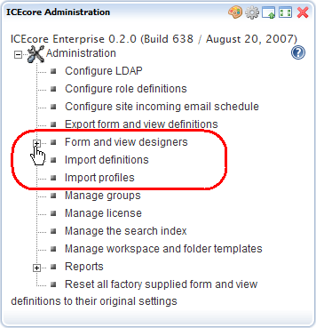 -
Click .
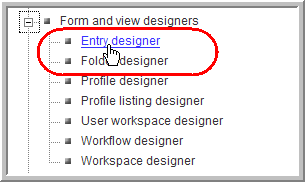 -
In the Designers window that appears, click .
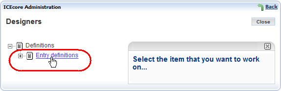 -
On the right-side of the window, click .
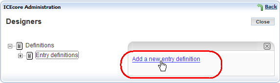 -
Type the name for the entry that you want to see in ICEcore into the field.
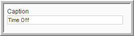 -
In the entry form that appears, type the name for this entry type into the field.
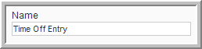 -
Select the family for this entry from the list box. Select the item type that is closest to the function of the item you are creating. People can use the family type when performing filtered searches. This custom entry has an family.
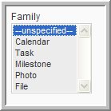 -
Select the comment types you want to allow for this new custom entry from the list box (use the Ctrl key to select multiple comment types).
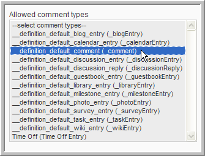 -
Click at the bottom of the entry form.
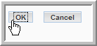A custom entry named now exists, which you can view under in the window.
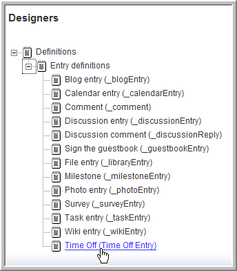
2.1.2 The Entry Designer Editing Window
The following image shows you the window when working with a specific entry.
2.1.3 Create a Custom Form for an Entry
-
Click the plus sign (+) to the left of to expand this section.
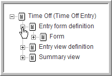 -
Click the plus sign (+) to the left of to expand this section and view the current elements in this form.
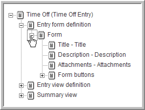 -
To delete an element:
-
Click the element ( ).
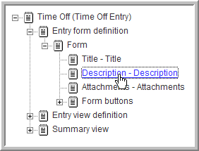NOTE:For this custom form, a simple text box element is going to be used instead of the element.
-
In the option dialog that appears to the right, click the option.
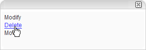 -
Click to confirm that you want to delete the element.
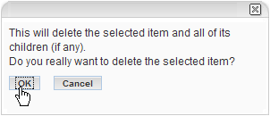The element is deleted and is removed from the and the area.
-
-
To hide an element from appearing in the form view:
-
Click the element you want to hide ( ).
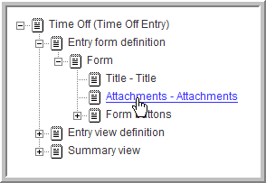NOTE:This custom entry is for entering your time off, there is no need to attach files to these entries.
-
In the options dialog, click .
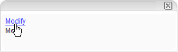 -
In the element form that appears, select the option.
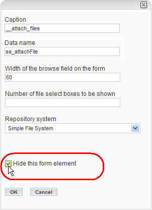 -
Click .
The element is removed from the area.
-
-
To add an element:
-
Click .
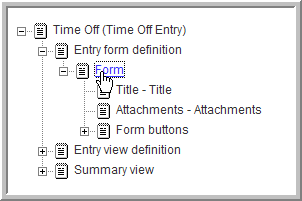 -
In the options dialog, click .
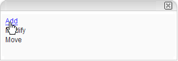The and appear to the right.
-
Click to add the element to use for entering the time off as an event with a start and end time.
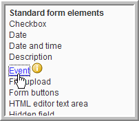 -
Fill in the element form.
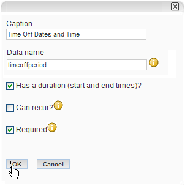-
Type in the Caption name (the name used in ICEcore).
-
Type in the .
NOTE:This is an internal-use, database name. Names for elements in one definition must be unique. The first character must be an alphabetic character (a-z, A-Z). For the rest, legal characters are alphanumeric characters (a-z, A-Z, 0-9), hyphens (-), and underscores (_).
-
Select the option.
-
Select the option.
-
Click .
The element appears under and in the area at the bottom (below the other elements).
-
-
-
To move an element:
-
Click the element.
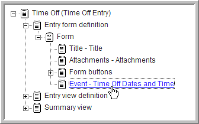 -
In the options dialog, click .
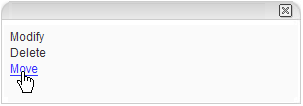 -
Click the element under that you want this element to appear under or above ( ).
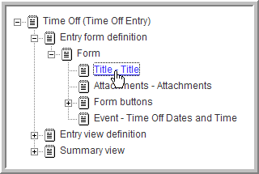 -
Select the option and click .
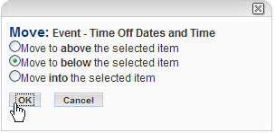The element moves to below the element.
-
-
Add a required element named and move it below the element.
-
Add a required element named and move it below the element.
-
To add a container:
So far all the elements have been added below , which is itself a container. In this step you want to add a Box container below form and move the element into the box.
-
Click .
-
In the options dialog, click .
The and appear to the right. Every element under , except , is a container.
-
Click Box.
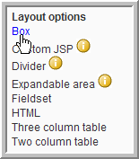 -
Select and click .
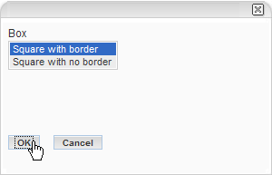 -
Click .
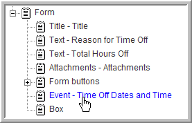 -
In the options dialog, click .
-
Click .
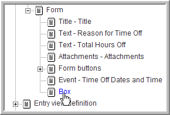 -
Select and click .
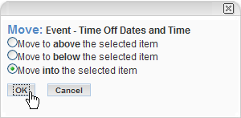Your custom form should now look like this:
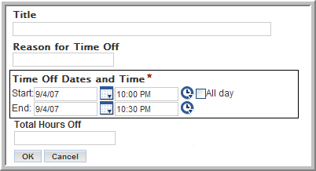
-
2.1.4 Create a Custom View for an Entry
-
Expand .
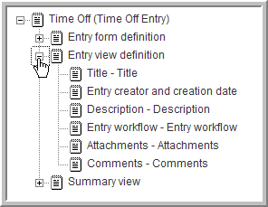 -
Select and delete the and elements.
-
Click , click in the option dialog, and click .
NOTE:Any elements you added to the custom form appear in the list when you are adding elements to the custom view.
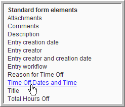 -
Click .
-
Click in the option dialog, click , and click .
-
Move the element below the element and move the element below the element.
Your custom view for this custom entry should contain these elements in this order now:
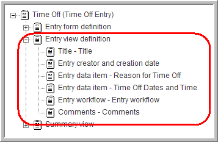NOTE:The Summary view is used for Blogs or Guestbooks. You can create a custom Summary view in the same manner as the custom view in this procedure.
2.2 Using a Custom Entry
Custom entries can be assigned to any folder, but you may want to configure specific folders for some types of custom entries depending on their purpose. For example, you might want a folder that only contains the custom entries.
For the custom entry, a team plans to create a special folder that only contains these specific entry types. The following procedures show you how to add this custom entry to a team folder and configure the folder to only utilize this entry type.
This section contains the following procedures:
2.2.1 Configure a Folder to Use Your Custom Entry
-
Find the folder you want to use for the teams time off entries ( for this procedure).
-
Select the menu item.
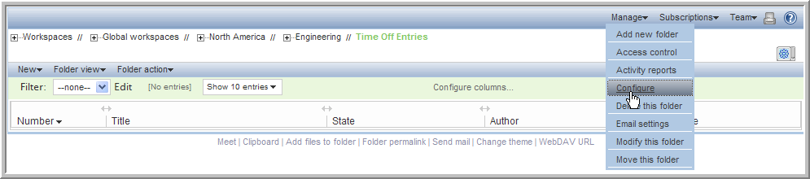 -
Under , select the and options (deselect any others) and click .
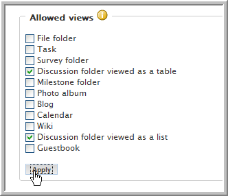 -
Under , select the option and click .
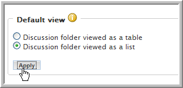 -
Under , select the entry type (deselect any others) and click .
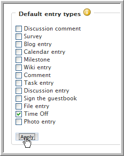NOTE:Users can now only enter entries in this folder.
-
At the top or bottom of this window, click .
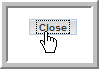
2.2.2 Add a Time Off Entry
-
Select the menu item.
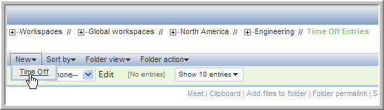NOTE: should be the only available menu item.
-
Fill out the Time Off entry form.
Type in a , , select your time off period and dates (time), and type in the .
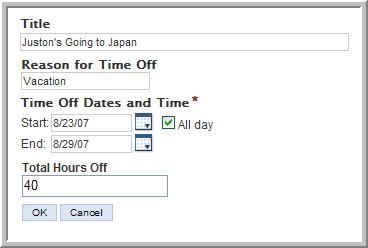 -
Click .
The new entry is added to the folder.
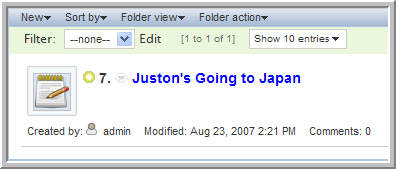
2.2.3 View the Time Off Entry
-
Click the title of the entry you want to view.
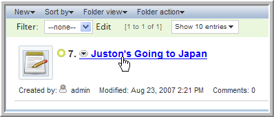 -
View the entry. You can see it displays the elements selected for this custom view.
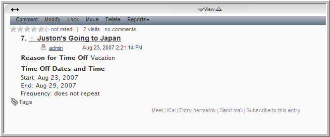
3.0 The Profile Designer
Use the Profile designer to edit the business card that appears on every user’s workspace. The following procedure shows you how to edit the business cards layout to taylor it for your specific company.
To edit the Business card:
-
From the portlet, click the plus sign (+) to the left of to expand this section and view the available designers.
-
Click .
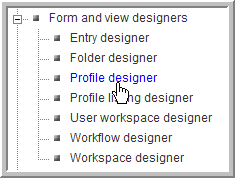 -
Expand and click .
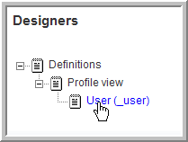You see the following for the user business card.
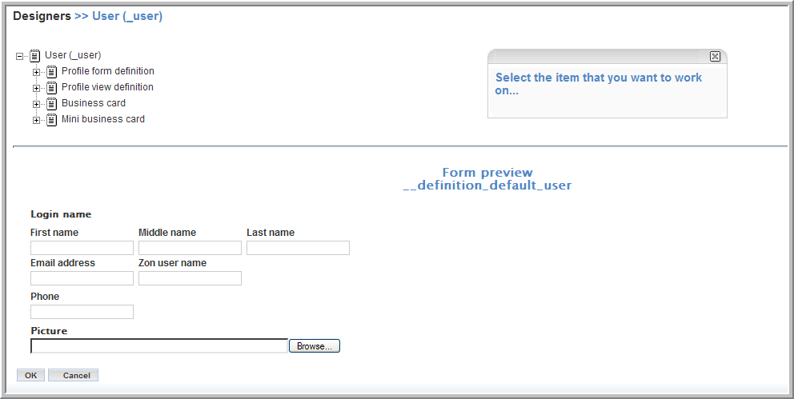 -
To edit the layout of the business card, expand .
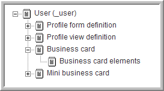Any element you add to appears below your picture on the business card. Any element you add to the appears to the right of your picture on the business card.
-
Add the user’s first name below their picture:
-
Click .
-
Click .
The following elements are available:
The upper section has elements for the business card with some already included in the . The Layout options allow you to add custom elements (including additional containers), see Create a Custom Form for an Entry.
-
Click .
-
Click in the dialog that appears.

appears below the business card.
-
-
Edit :
-
Click .
NOTE:You can perform the same steps to add a new element below the , which would appear to the right of your picture on the business card, or you can edit the to select or deselect the elements that are already in the .
-
Click .
The dialog for appears.
-
Select the profile elements you want to appear to the right of the user’s picture on the business card (use the Shift or Ctrl keys to select multiple elements).
For this example, select all elements.
NOTE:The Maximum width and Maximum height fields allow you to limit the size of your users’ pictures on their business cards. The graphic is scaled to fit within the maximum width and height that you specify, without distorting the picture (the “aspect ratio” is maintained).
-
Click .
NOTE:You might also have to add the element in the so that users can enter their organizations when they modify their profiles. This is true for any new elements you add to the business card (you need to add the new elements to the so that users can input values when they modify their profiles).
-
-
Go to a user’s workspace and view the changes (in this example the element has been given a value for the user).
4.0 Creating a Basic Workflow Process
When developing a workflow process with ICEcore, use the portlet. In ICEcore, the completed workflow process is a separate function that you can then apply to entries using one of several methods ICEcore provides to start the workflow.
As one example, you can begin by creating a discussion topic in a folder, and then initiating an allowed workflow process for that entry (workflow availability is assigned in each folder’s configuration). The topic enters into the first state of the initiated process, and the workflow begins only for that one particular entry. As another example, you can specify in a folder’s configuration to initiate a specific workflow process automatically every time a user creates an entry of a specific type (including your own customized entries).
This chapter shows you how to implement a basic workflow design. The Advanced Workflow chapter expands the design (using ICEcore’s Advanced Workflow add-on module) to more closely match the needs of a typical production-ready system (for example, using questions).
The following sections are covered in this chapter:
4.1 Creating a Workflow
The following procedures show you how to define a workflow, add the states it requires, and define the transitions it requires. The example used is the creation of a Paid Time Off (PTO) request workflow.
This section contains the following topics:
4.1.1 Define a Workflow
-
From the portlet, click the plus sign (+) to the left of to expand this section and view the available designers.
-
Click .
-
Click .
-
In the options dialog on the right, click .
-
In the form that appears on the right, type in the (workflow name) and (name that appears in ICEcore) for this workflow.
-
Click .
The PTO workflow is now defined in ICEcore.
4.1.2 Add States to a Workflow
-
From the portlet, click the plus sign (+) to the left of to expand this section and view the available designers.
-
Click .
-
Expand .
-
Click .
-
Click .
-
In the options dialog on the right, click .
-
Click to add a state to this workflow.
-
Type in the (name used in ICEcore), (database name), and for this workflow as follows:
NOTE:The is an internal-use, database name. Names for elements in one definition must be unique. The first character must be an alphabetic character (a-z, A-Z). For the rest, legal characters are alphanumeric characters (a-z, A-Z, 0-9), hyphens (-), and underscores (_).
-
= Submit
-
= Submit_PTO_Request
-
= PTO Request Submitted
-
-
Click .
The new state is added to the workflow and appears in the Workflow Preview area at the bottom part of the window.
-
Repeat these steps to add the , , , and states.
NOTE:Once the states are defined, the next step is to develop transitions that move an entry from one state to the next. You can also take action when a process enters into or exits from a state. For example, upon entry (or exit) you can send a notification, begin or end a parallel process, or set a variable.
4.1.3 Define Manual Transitions for a Workflow
The following steps show you how to set up manual transitions (only manual transitions are available without the Advanced Workflow add-on module) between the states in this workflow.
-
Under , expand and click .
-
In the options dialog on the right, click .
-
In the options dialog, click .
NOTE:The is the only available transition in ICEcore unless you are using the Advanced Workflow add-on module.
-
In the list box, select and click .
After you successfully complete the previous steps, the preview portion of the page displays an arrow in the flow chart that represents the newly defined transition.
-
Repeat these steps to create the following manual transitions:
-
to
-
to
-
to
NOTE:You can drag each state to the position you want it to appear in the preview area and click to save these positions for ease of viewing.
-
4.1.4 Configure a Folder to Use This Workflow
You need to configure each folder in which you want to use this new workflow.
-
Go to the folder in Human Resources.
-
Select the menu item.
-
Under , select the option.
-
Click
-
Click .
User can now use the menu item when viewing entries in this folder to start this workflow process.
4.1.5 Test the New Workflow
After creating a minimally functional workflow process, verify that the transitions function properly. (At this state of its development, the process does not define specific access to the workflow based upon the participant. This means that any user with access rights to the folder that is associated with this workflow can transition the entry through the entire workflow.) This example uses John Waters.
-
Log in as John Waters (jwaters).
-
Go to the folder in Human Resources.
-
Click menu item to add a discussion topic.
-
Type in the and information and click .
The new entry appears in the folder.
-
Click on the entry title to view the entry.
-
Select the menu item.
-
In the confirmation dialog that appears, click to start the workflow.
The workflow is added to entry with the entry in the initial state.
-
Select from the drop-down list and click .
The should change to .
-
Select from the drop-down list and click .
The state should change to Deny and there should be no actions available (the Transition to: drop-down list should be gone) since there are no transitions from .
-
Select the menu item to stop the workflow process.
-
Select the menu item to start the workflow process.
-
Transition the entry through all the states (except ) until you reach (no transitions exist from ).
The manual transitions allow the user to change the state of this workflow, but in a real business process these transitions should be controlled by specific groups or individuals. The next section deals with setting access controls in the workflow.
4.2 Setting Access Controls
Using the access control feature, you can specify which participants may participate in causing an entry to transition from one state to another. Also, if the entry contains sensitive information at any time during the workflow process, you can restrict who may view the entry. This feature implements “per entry” access control, checking privileges for individual entries at each state in the workflow process.
What's in this Section?
The following sections describe how to set up access control in ICEcore as well as using various approaches with the workflow tools that set access control for one or more states:
4.2.1 What is Access Control?
When creating a workflow process using default settings, every user who can enter the discussion forum has access to view the entry and to participate in state changes. For almost all production-ready workflow systems, it is necessary to alter this default access control, so that:
-
Only members of the team assigned to the business process may participate in the workflow process.
-
Only designated responsible individuals participate in changing states.
NOTE:Access control is the term used to identify which users have the right to perform specific tasks at each state within the workflow process.
Planning Access Control
Before configuring access, identify the following:
-
States - You defined these in the previous section.
-
Access rights - For each state, define who can view, modify or delete, respond to, and participate in state transitions.
-
Users or Groups - Map “participants” to usernames and group names within ICEcore.
Create a table to use for access-control planning as follows:
Subsequent sections in this chapter describe how to implement this plan for access control.
4.2.2 Set Access Rights
Entries in the state needs to be viewable by the users who created the , but not by any of their peers. In addition, only a manager can transition an entry from to , and from to or . Human Resources needs to transition each entry from Approve to Record.
-
From the portlet, click the plus sign (+) to the left of to expand this section and view the available designers.
-
Click .
-
Expand .
-
Click .
-
Expand .
-
Add the to the workflow states:
-
Click .
-
In the options dialog on the right, click .
-
Click .
is added below .
-
Repeat this for each state to add the .
-
-
Set the rights:
-
Under , click .
-
Click .
-
Click .
-
Deselect the option, select the option, add the group, and click .
Now only the entry creator and managers can view these entries.
NOTE:The drop-down list allows you to add any user lists that might be assigned to specific entry types.
-
Repeat this for each state to add the rights (make sure to give the group rights in the and states).
-
-
Set the access controls:
-
Under , click .
-
Click .
-
Click .
-
Deselect the option, add the group and click .
Now only a Manager can transition the entry out of the state.
-
Repeat this for the and states with the following rights:
-
- Managers group only
-
- Human Resources group only
-
-
-
Set the access controls:
-
Under , click .
-
Click .
-
Click .
-
Deselect the option, add the group, and click .
Now only a Manager can transition the entry into the state.
-
Repeat this for the and states with the following rights:
-
- Managers group only
-
- Managers group only
-
- Human Resources group only
The access rights for this workflow are now set. You can log in as the members of the various groups to walk through the workflow and test it.
NOTE:You have to set the and the access rights correctly for all states in your workflow to map the business process correctly.
-
-
4.2.3 Summary
Access control is an important aspect of workflow, because it allows a workflow designer to set levels of security and access to each task within the workflow.
While developing a workflow process, you can use workflow tools to set access for one state at a time or to work with more than one state simultaneously. Access control is comprised of who can see, modify or delete, respond to (a workflow question), or transition into or out of a specified state. When defining access control, you can specify all users, entry creators, or specific users and groups.
When you consider granting workflow access to an individual, make a distinction between times when more than one individual can use the workflow and when a specific individual always uses the workflow. The individual applies to any ICEcore user who can create entries in that folder. However, there may be occasions when a specific user should be the only user who has certain access rights every time the workflow runs for an entry.
4.3 Notifying Participants
ICEcore can send e-mail notifications at different states of the workflow process. These notifications alert participants that the work has reached a state that requires their attention, provide information to managers who are tracking the process of the work, and provide a one-click method for a participant to view and work with the entry.
NOTE:In order to use workflow notifications, ICEcore must be configured to enable e-mail notifications. Refer to the ICEcore Installation and Configuration Guide for information on configuring e-mail servers and notifications.
What's in this Chapter?
This chapter includes instructions on creating the following types of notification:
-
Notification of Request Submission - Define a notification that is sent whenever someone submits a .
-
Notification of Request Approval - Define a notification that is sent when the manager approves a .
-
Notification of Request Denial - Define a notification that is sent when the manager denies a .
-
Notification of an Overdue State - Define a notification that is sent whenever a state reaches a specified time limit.
The following sections walk you through these tasks:
To determine places in the process where a notification can be helpful, review the following table:
4.3.1 Define an On Entry Process:
You can take action when a process enters into or exits from a state. For example, upon entry (or exit) you can send a notification, begin or end a parallel process, or set a variable.
-
Expand .
-
Click .
-
Expand .
-
Click .
-
In the options dialog on the right, click .
-
Click .
-
Click .
The process is added to the Submit state.
4.3.2 Add a Notification to the On Entry Process
-
Click .
-
Click .
-
Click .
-
Add the group to the form that appears.
-
Type in a subject line for this notification and click the option to use the entry in the body of the notification e-mail.
-
Click to create the notification.
The is added under the process.
-
Repeat these steps to create a notification of request approval and a notification of request denied with the following settings:
-
Notification of Approval - notify the and the group whenever the manager approves a PTO Request. The group must record the time in the Time Off database and transition the request to the state.
-
Notification of Denial - notify the whenever the manager denies a PTO Request.
-
4.3.3 Test the Notifications
To test the notifications, log on as different users and move an entry through the workflow process. As the entry transitions, you should receive e-mail notification. If not, make sure that you configured e-mail settings on your server and review the workflow notifications you have created.
4.3.4 Summary
Notifications are a vital mechanism for maintaining the efficient and proper flow of work through the process. Notification can be sent to a number of different workflow participants, whenever a workflow process enters or exits a specific state. In addition to many other reasons, notifications can communicate approval, denial, completion or overdue status.
4.4 Using the Workflow in a Folder
The following procedure shows you how to set up a folder to use this workflow with a custom entry (see Section 2.0, Custom Entries).
-
Go to the folder in Human Resources.
-
Select the menu item.
-
Under , select the and options (deselect any others) and click .
-
Under , select the option and click .
-
Under , select the entry type (deselect any others) and click .
-
Under , select the option.
-
Click
-
Under Workflow associations, select PTO Request from the Time Off drop-down list and click .
NOTE:A drop-down list appears for each you select. When you use a drop-down list to select a workflow process, that process begins automatically whenever a user creates an entry of that type.
-
Click .
Users can now only enter entries in this folder, which automatically triggers the workflow process.
5.0 Advanced Workflow
This chapter expands the workflow design in the previous chapter (using ICEcore’s Advanced Workflow add-on module) to more closely match the needs of a typical production-ready system, (for example, using questions).
In the workflow designed in Section 4.0, Creating a Basic Workflow Process, ICEcore considers only one fact when determining if an entry’s state should change: did someone transition the entry manually?
NOTE:You need to have purchased the Advanced Workflow add-on module to perform any transitions in your workflows besides manual transitions.
Despite the power of manual transitions, there are many times when a business process calls for a more complex set of conditions, such as when someone adds a reply to a question in the entry, or when a certain number of days have passed without a transaction occurring.
In many complex transition scenarios, it can be helpful to define a workflow question for your process.
What's in this Chapter?
This chapter provides instructions for creating questions within workflows and for configuring state transitions based upon responses to the workflow question, which appears when the entry is in a specific state:
NOTE:A workflow question allows the workflow process to use a set of answers to determine whether and how an entry should transition.
5.1 Adding a Question to the Workflow
NOTE:A question can be specific to one state. As another option, you can define a global question, which you can then associate with any number of states; this is helpful when multiple states require the same question and answer set. Each state can have only one associated question.
For example, consider the following table:
When reviewing the conditions table, look for conditions that can be automated. For example, the third and fourth items are excellent examples of conditions that can be determined automatically using workflow tools.
For example, you can alter the implementation of the workflow, so that the manager’s answer to a workflow question determines if a request is or . Given the design of the workflow, the workflow question should appear to the manager in the state.
To add a Workflow Question and Responses to the Review State:
NOTE:The access control determines who can view a Workflow question in a given state (see Section 4.2.2, Set Access Rights).
-
From the portlet, click the plus sign (+) to the left of to expand this section and view the available designers.
-
Click .
-
Expand .
-
Click .
-
Expand and click .
-
In the options dialog on the right, click .
-
Click .
-
Type in the ( approve_request) and the ( Do you approve of this request?) and click .
The process appears below the state.
-
Click .
-
Click .
-
Click .
-
Type in the ( approve_request_yes) and the ( Yes) and click .
The is added below the .
-
Repeat steps 9-12 to add a “ No” response to this .
5.2 Adding Transitions on Response
IMPORTANT:For the entry to transition to another state based on participants’ responses to the workflow questions, the responses must be associated with the new non-manual response transitions.
The following sections describe how to add response transitions and remove the manual transitions:
5.2.1 Add the Response Transitions
The question, “Do you approve of this request?” has two possible responses. To implement our design, both of the responses must have an associated transition.
NOTE:The access control determines who can view a Workflow question in a given state (see Section 4.2.2, Set Access Rights).
-
Expand .
-
Click .
-
Click .
NOTE:Only the Manual transition option is available for basic workflow. All other transition types are part of the Advanced Workflow add-on module.
-
In the field, type in the for your ( approve_request).
-
In the Transition on response field, type in the for your ( approve_request_yes).
-
In the drop-down list, select the state to which you are transitioning ( Approve).
-
Click .
The new process is added under .
-
Repeat this procedure to add a for the “No” ( approve_request_no) that transitions to the state.
5.2.2 Removing Older Transitions
The creation of the Transition on response processes renders the existing manual transitions unnecessary.
To Remove Manual Transitions:
-
Under > , click the first .
-
In the options dialog on the right, click .
-
In the confirmation dialog that appears, click to delete the .
-
Repeat this procedure to delete the remaining for the state.
The Workflow section of an entry in the state now shows the question and answers for those users with the correct access rights ( ).
Glossary
Items that include an “(a)” are more relevant for ICEcore site administrators.
access control
The tool that determines who has the right to perform which tasks in which places. See also role-based access control.
accessibility mode
An optimized user interface that facilitates use by assistive devices, such as auditory readers.
accessory
A section located at the top of a workspace or folder page that provides a summary view, most likely of the information contained within the item. For example, an accessory can show all of the entries within a folder authored by someone designated as a subject-matter expert.
advanced search
Extra search tools that allow you to specify more specific criteria (such as the author of an item or restricting the search to a portion of the workspace tree).
alias
See e-mail alias.
attachment
A file attached to an entry.
author
The person who created an entry.
blog
A folder that contains a chronological listing of journal entries.
blog archive
A feature of blog folders that allows you to see entries authored in a specific month.
buddy list
A list of people whose presence you want to check and whom you contact frequently.
calendar
A folder containing entries for scheduled appointments.
clipboard
A tool that gathers people’s names. Later, when using a tool that requires names, you can take them from your clipboard.
comment
A reply to an entry.
community tag
A keyword tag applied to an item by the owner of a workspace or folder. Other users of the workspace or folder can perform searches based on community tags.
configuration (a)
A set of tools that alter the way item content is presented. There are many types of configuration, ranging from setting allowable views for an item, selecting a color scheme, creating custom entries, and enabling workflow processes.
default view
The configuration of the information you see when you first view a workspace or folder. Some items may be configured to allow alternate views, which you can select.
designer (a)
A tool used to create definitions or workflow processes.
discussion
A folder whose entries are discussion topics and comments about those topics.
e-mail alias
An alternative e-mail address for an e-mail account. To enable e-mail posting into a folder, you must provide an e-mail alias for the one account used to post into all folders in your ICEcore installation. Consult with your ICEcore site administrator for further assistance; site administrators, consult with the IT person responsible for creating e-mail accounts to create new aliases.
e-mail notification
An e-mail message that ICEcore sends indicating new or changed entries in a folder (and subfolders).
entry
An item in a folder.
favorites panel
A tool used to save links to workspaces and folders most important to you, providing a method of accessing these places quickly.
file folder
A folder whose entries are configured to highlight an attached file and to facilitate file management.
filter
A setting that limits a folder listing to only the entries that match the filter’s search criteria. For example, you can create a filter that shows only the contents of a folder authored by you or that were created past a certain date.
folder
form (a)
An HTML form used to create a workspace, folder, or entry.
global workspace
workspace that, by default, allows everyone in your organization to participate.
help mode
A dimmed page and information icons (“i”). When you click on an information icon, ICEcore presents a panel of information about that section of the page.
inherit (a)
A process by which a workspace or folder automatically uses configuration settings from its parent.
instant message (IM)
A quick communication between teammates using the ICEcore Conference messaging software.
LifeRay (a)
The portal software within which ICEcore runs by default.
meeting
An online communication by teammates using the ICEcore Conference messaging software. ICEcore Conference provides tools that assist with online meetings, such as people designated as running the meeting, a way for participants to “raise their hands,” and a whiteboard.
milestone
navigator
A set of tools that you can use to go anyplace within ICEcore you want to go. The tools include “ My workspace,” “ Favorites,” viewing your teams, search, Help, and a workspace tree.
owner
The person who created the workspace, folder, or entry.
parallel workflow process (a)
A set of state transitions that happen at the same time as other state transitions. A state in the main thread initiates the parallel process, and a state later in the main thread can wait for the completion of the parallel thread.
parent (a)
A workspace or folder that contains another workspace or folder. The item contained within the parent is sometimes called its child.
participant
An access role that, generally, by default, allows people to author entries in a folder.
permalink
A web address (URL) for an ICEcore workspace, folder, or entry that you can copy, paste, and send to a teammate so that they may access a page directly by specifying the address to their web browser.
personal tag
A keyword tag that you apply to an item, and that only you can see and use.
personal workspace
A workspace that serves as a person’s homepage in ICEcore, including contact information, pictures, a personal blog, and more.
photo gallery
A folder whose entries are pictures.
portal page
A web page that can run various applications in sections of its page. For example, Google and Yahoo use portal pages. Sections within a portal page may display the local time, the local weather, your favorite stock quotes, and more.
portlet
A section on a portal page. ICEcore runs within portlets.
presence
A person’s online status (online, away from the computer, offline, status unknown), represented in ICEcore by people icons of certain colors.
project-management workspace
A workspace configured to facilitate the tracking of tasks and completion of complex project work.
role-based access control
A mechanism that controls access by assigning people and groups to roles, and the roles determine the rights assigned to those people. See the online Help for a list of ICEcore default role definitions.
site administrator
The person or people who have the right to perform any task anyplace in the ICEcore installation.
state
See workflow state.
subscription
A way to track new or changed items in ICEcore.
tag
A keyword that anyone can apply to a workspace, folder, or entry to make it easier to find. See also personal tag and community tag.
task
A folder that, by default, contains entries that track progress in regard to completing an assignment.
team
An access role that, by default, allows people to participate in a workspace or folder, to do some minor administrative tasks, and to communicate easily with each other.
team workspace
A workspace that restricts participation to only teammates.
template (a)
A set of default configuration settings used to create a new workspace or folder. A template includes at least one definition, access control, a possible hierarchy of defined items, and possibly more.
type to find
An ICEcore tool that uses the characters you have typed so far to present a list of possible choices. This tool is active for text boxes whose values are within a defined set: for example, people, places (workspaces and folders), and tags.
view
A presentation of an item’s content. For example, you can view a discussion folder in either a list or table format. By default, most folders use one view (calendar folders use a calendar view, blog folders use a blog view, and so on).
visitor
An access role that, by default, allows people to read entries and make comments on them (but not create new entries).
WebDAV
The Web Distributed Authoring and Versioning protocol. If your system provides a tool that uses this protocol, it allows you to manage ICEcore file-folder entries using the WebDAV window.
wiki
A folder whose entries are authored by all participants.
workflow
An online representation of a business process (for example, document review, paid time-off requests, document sign off, and so on). An entry can have an associated workflow process, which places the entry into various workflow states.
workflow state
A status label for an entry in a workflow process. A state determines who has the right to work with an entry (including who may see it), who needs to be notified, who needs to perform the next task, and which subsequent states are possible.
workspace
A container for folders and other workspaces.
workspace tree
A tool that allows you to navigate the hierarchy of workspaces, subworkspaces, folders, and subfolders within ICEcore.
A.0 Legal Notices
SiteScape, Inc., makes no representations or warranties with respect to the contents or use of this documentation, and specifically disclaims any express or implied warranties of merchantability or fitness for any particular purpose. Further, SiteScape, Inc., reserves the right to revise this publication and to make changes to its content, at any time, without obligation to notify any person or entity of such revisions or changes.
Further, SiteScape, Inc., makes no representations or warranties with respect to any software, and specifically disclaims any express or implied warranties of merchantability or fitness for any particular purpose. Further, SiteScape, Inc., reserves the right to make changes to any and all parts of SiteScape software, at any time, without any obligation to notify any person or entity of such changes.
Any products or technical information provided under this Agreement may be subject to U.S. export controls and the trade laws of other countries. You agree to comply with all export control regulations and to obtain any required licenses or classification to export, re-export or import deliverables. You agree not to export or re-export to entities on the current U.S. export exclusion lists or to any embargoed or terrorist countries as specified in the U.S. export laws. You agree to not use deliverables for prohibited nuclear, missile, or chemical biological weaponry end uses.
SiteScape, Inc., has intellectual property rights relating to technology embodied in the product that is described in this document.
- SiteScape, Inc.
- 12 Clock Tower Place, Suite 210
- Maynard, MA 021754
- U.S.A.
- www.SiteScape.com
Third-Party Materials
- All third-party trademarks are the property of their respective owners.